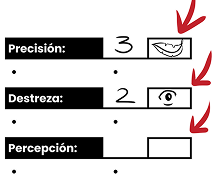
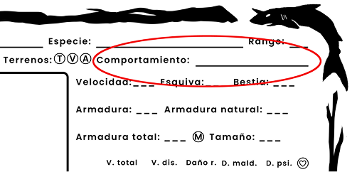
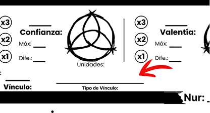
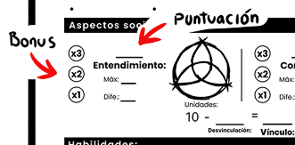
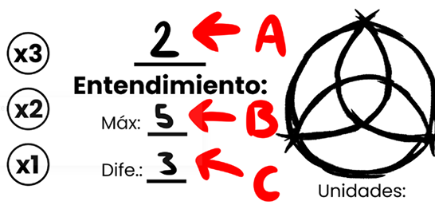
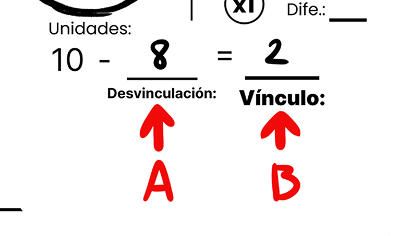
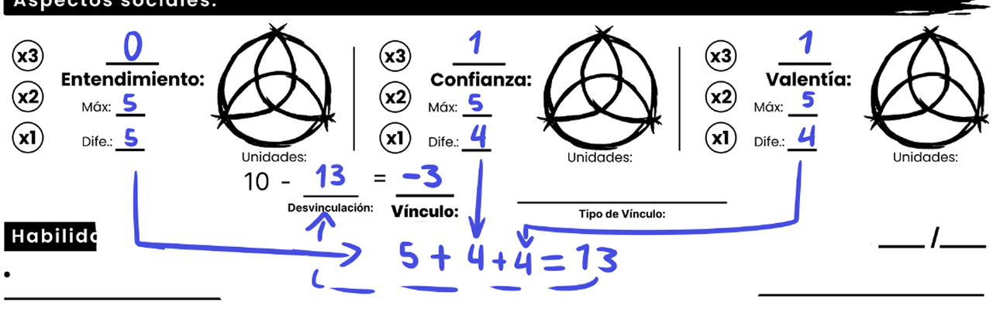

Paso 1 de 5
Selecciona una bestia disponible de tu nación.
Busca tu bestia para ver sus atributos, habilidades y características.
Escribe la edad de tu bestia.
Elige: Macho o Hembra.
Usa los datos de la bestia elegida.
Cada bestia tiene atributos base definidos.
Puedes añadir +1 a un atributo.
Dibuja 4 ojos y 2 hojas en los recuadros de los atributos, deberas escojer que atributos les daras esos bonus:
Ojo: Mas 1 a la tirada
Hoja: Se puede relanzar la tirada.
Estos bonus son temporales, una vez usados se deben borrar.

Elegir enfoques
Los enfoques otorgan un bonificador de +2 en las tiradas relacionadas con una habilidad específica dentro de un atributo.
Anota las habilidades de la bestia elegida.
Anota el ataque de la bestia elegida.
Las personalidades representan el temperamento base de una bestia y otorgan un bonificador de atributo asociado a su comportamiento.
Bestia que siente inseguridad o miedo al interactuar con otros.
Bonificación: +1 Precisión
Bestia que muestra ira o hostilidad fácilmente, a menudo de forma impulsiva.
Bonificación: +1 Fuerza
Bestia que siente preocupación excesiva o nerviosismo ante situaciones.
Bonificación: +1 Destreza
Bestia que muestra poca empatía o calidez emocional hacia los demás.
Bonificación: +1 Instinto
Bestia que transmite buen humor y entusiasmo en su forma de ser.
Bonificación: +1 Comunicación
Bestia que duda constantemente de sí misma o de sus decisiones.
Bonificación: +1 Percepción
Bestia que usa gestos o palabras para mostrar interés romántico o atracción.
Bonificación: +1 Comunicación
Bestia que trata a los demás con respeto, educación y buenas formas.
Bonificación: +1 Comunicación
Bestia que piensa principalmente en sí misma y sus propias necesidades.
Bonificación: +1 Voluntad
Bestia que analiza las situaciones antes de actuar o tomar decisiones.
Bonificación: +1 Instinto
Bestia que evita hacer esfuerzos o actividades por falta de motivación o energía.
Bonificación: +1 Percepción
Bestia que muestra empatía y deseo de ayudar a quienes sufren o necesitan apoyo.
Bonificación: +1 Comunicación

En esta sección definirás cómo es tu relación con tu bestia vinculada.
Existen tres aspectos sociales que representan distintos elementos de vuestro vínculo:
El primer paso es definir el tipo de vínculo que existe entre tu personaje y su bestia.
Cada tipo de vinculación representa la forma en que normalmente se relacionan y determina las puntuaciones iniciales de los aspectos sociales.
Elige una de las siguientes opciones y anótala en el apartado Tipo de Vinculación de tu hoja de personaje.
Tú y tu bestia destacan luchando juntos. El combate es el momento donde mejor encuentran su sincronía.
Tú y tu bestia disfrutan de la compañía mutua en los momentos tranquilos de la vida. Compartir tiempo juntos fortalece vuestro vínculo.
Existe una conexión profunda entre ambos. En los momentos más difíciles saben que pueden contar el uno con el otro sin necesidad de palabras.
La planificación y la coordinación son vuestra mayor fortaleza. Vuestro vínculo destaca por la estrategia y la capacidad de actuar como una sola mente.
Ambos se protegen mutuamente en combate. Cada uno vigila la espalda del otro y lucha como parte de un mismo equipo.
La relación entre ambos se basa en la diversión, los gestos, las señales y la compañía. Es uno de los vínculos más tiernos entre un druida y su bestia.

Cada tipo de vínculo otorga un +1 a atributos específicos, tanto para el druida como para la bestia. El atributo de Inteligencia del druida se refleja como Instinto en la bestia.
El bonus se aplica al mismo atributo en ambos (druida y bestia), según el tipo de vínculo elegido.
+1 a Pelea, Inteligencia, Voluntad o Precisión.
+1 a Voluntad o Comunicación.
+1 a Voluntad o Constitución.
+1 a Inteligencia, Comunicación o Percepción.
+1 a Pelea o Precisión.
+1 a cualquier atributo excepto Constitución.
Una vez elegido el tipo de vinculación, asigna las siguientes puntuaciones y bonificadores a los aspectos sociales.

| Compañero de Guerra | Puntuación | Bonificador |
|---|---|---|
| Entendimiento | 1 | x2 |
| Confianza | 0 | x1 |
| Valentía | 2 | x3 |
| Compañero Leal | Puntuación | Bonificador |
|---|---|---|
| Entendimiento | 1 | x2 |
| Confianza | 2 | x3 |
| Valentía | 0 | x1 |
| Compañero de Sangre | Puntuación | Bonificador |
|---|---|---|
| Entendimiento | 0 | x1 |
| Confianza | 2 | x3 |
| Valentía | 1 | x2 |
| Compañero Estratégico | Puntuación | Bonificador |
|---|---|---|
| Entendimiento | 2 | x3 |
| Confianza | 0 | x1 |
| Valentía | 1 | x2 |
| Compañero de Armas | Puntuación | Bonificador |
|---|---|---|
| Entendimiento | 0 | x1 |
| Confianza | 1 | x2 |
| Valentía | 2 | x3 |
| Compañero de Juego | Puntuación | Bonificador |
|---|---|---|
| Entendimiento | 2 | x3 |
| Confianza | 1 | x2 |
| Valentía | 0 | x1 |
Cada aspecto social tiene una puntuación actual, un valor máximo y una diferencia.

Ejemplos:
Estos valores representan el estado general de la relación entre tu personaje y su bestia.
Suma las diferencias actuales de Entendimiento, Confianza y Valentía. El resultado es tu valor de Desvinculación.

Resta la Desvinculación a 10.
Fórmula:
Vinculación = 10 − Desvinculación
Desvinculación = 5 + 4 + 4 = 13
Vinculación = 10 − 13 = -3

Detalles adicionales
| Constitución | Vida |
|---|---|
| -2 | 40 |
| -1 | 45 |
| 0 | 50 |
| 1 | 55 |
| 2 | 60 |
| 3 | 65 |
| 4 | 70 |
| 5 | 75 |
| 6 | 80 |
| 7 | 90 |
| 8 | 100 |
| 9 | 110 |
| 10 | 130 |
| 11 | 145 |
| 12 | 160 |
| 13 | 175 |
| 14 | 180 |
| 15 | 200 |
| Puntuación (Voluntad / Inteligencia) | Nur |
|---|---|
| -2 | 0 |
| -1 | 0 |
| 0 | 0 |
| 1 | 5 |
| 2 | 8 |
| 3 | 10 |
| 4 | 13 |
| 5 | 15 |
| 6 | 18 |
| 7 | 22 |
| 8 | 25 |
| 9 | 28 |
| 10 | 30 |
| Puntuación en destreza | Velocidad |
|---|---|
| -2 | 2 |
| -1 | 2 |
| 0 | 2 |
| 1 | 3 |
| 2 | 3 |
| 3 | 4 |
| 4 | 4 |
| 5 | 5 |
| 6 | 5 |
| 7 | 6 |
| 8 | 6 |
| 9 | 7 |
| 10 | 7 |
| 11 | 8 |
| 12 | 8 |
| 13 | 9 |
| 14 | 9 |
| 15 | 10 |
| Puntuación en Constitución | Peso soportado |
|---|---|
| -2 | 3 |
| -1 | 5 |
| 0 | 6 |
| 1 | 8 |
| 2 | 10 |
| 3 | 14 |
| 4 | 17 |
| 5 | 20 |
| 6 | 25 |
| 7 | 30 |
| 8 | 35 |
| 9 | 40 |
| 10 | 50 |
La esquiva es igual a la destreza y si tienes el enfoque de esquivar mas 2.
Escribe un objeto especial que conecte a tu bestia contigo. Tanto tú como ella tendrán una copia en la sección de equipo, este objeto será necesario para hacer ceremonias con tu bestia vinculada
Ejemplos: Anillo de madera, arete de pluma, tatuaje runa, esmeralda...
Elegir el nombre de tu druida
Cada nación posee un idioma propio con patrones fonéticos únicos.
[Sílaba del jinete] + [Sílaba de nación] + [Sílaba variable]
Ejemplo: Rra + Na + Kru → Rranakru Yak + Ta + Bel → Yaktabel Cry + Sha + Mor → Cryshamor Representan a la persona que vincula a la bestia. Rra, Kro, Vek, Dru, Gha, Tho, Zek, Bra, Rhu, Kha, Vra, Trok, Nha, Sku, Dza Identifican el origen cultural. Na (bosque), Ta (costa), Sha (desierto), Dra (montaña), Ke, Lu, Va, Se, Mo, Ri, Za, Qu, He, Yi, Tu Rra + Na + Re → Rranare Yak + Ta + Sk → Yaktask Cry + Sha + Ho → Cryshaho Vek + Dra + Bl → Vekdrabl Tho + Na + Wi → Thonawi No se pueden unir sílabas del mismo tipo de sonido consecutivamente. Tipos: Ejemplo: Rra + Na + Bl ✔️ / Rra + Kro + Bl ❌ Si dos consonantes chocan, se suavizan con vocales intermedias. Krsh → Karesh / Rrbl → Rarabel / Dshk → Dashak Cada nombre debe tener una vocal dominante: A, O, I, U o E. Los nombres no deben terminar en sonido duro sin vocal final. ❌ Rranak / ✔️ Rranaka Las sílabas se fusionan al unirse: Rra + Na → Rrana / Yak + Ta → Yakta / Cry + Sha → Crysha Solo puede haber un sonido raro por nombre (rr, zh, kh, sh, qr, th). Los nombres pueden acortarse en uso cotidiano: Rranakru → Rrakru / Yaknabel → Yakbel / Cryshamor → Cryshor Entrada: Rra + Na + Re + Ho Proceso: Resultado: Rranareho (ritual) / Rraneho (cotidiano)Sistema de nombres de bestias
Estructura
Sílabas del jinete (vínculo)
Sílabas de nación
Sílabas de color
Sílabas de comportamiento
Sílabas de rasgo físico
Ejemplos completos
Reglas de pronunciación (idioma tribal)
1. Regla de alternancia
2. Regla de choque consonántico
3. Regla de vocal dominante
4. Regla de suavizado final
5. Regla de fusión obligatoria
6. Regla de ritmo tribal
7. Regla de límite de sonidos raros
8. Regla de contracción
Ejemplo completo de creación
¡Felicidades tu bestia esta lista para la aventura!